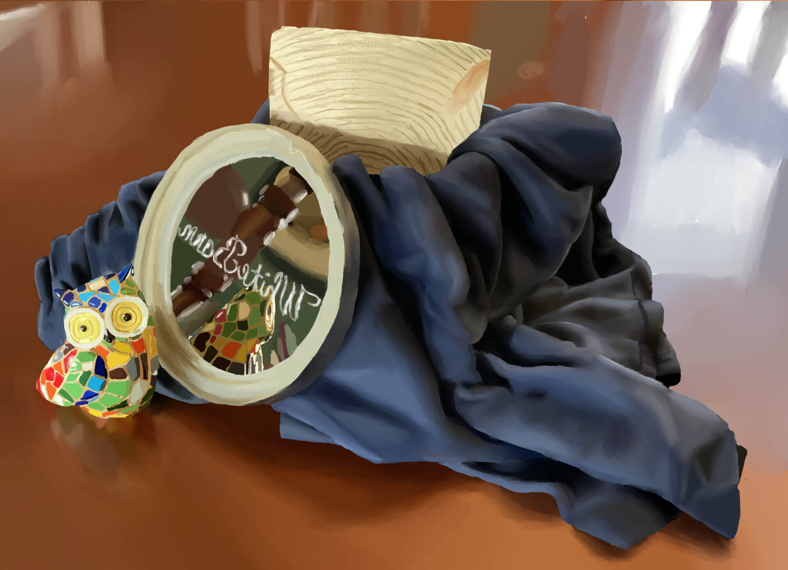
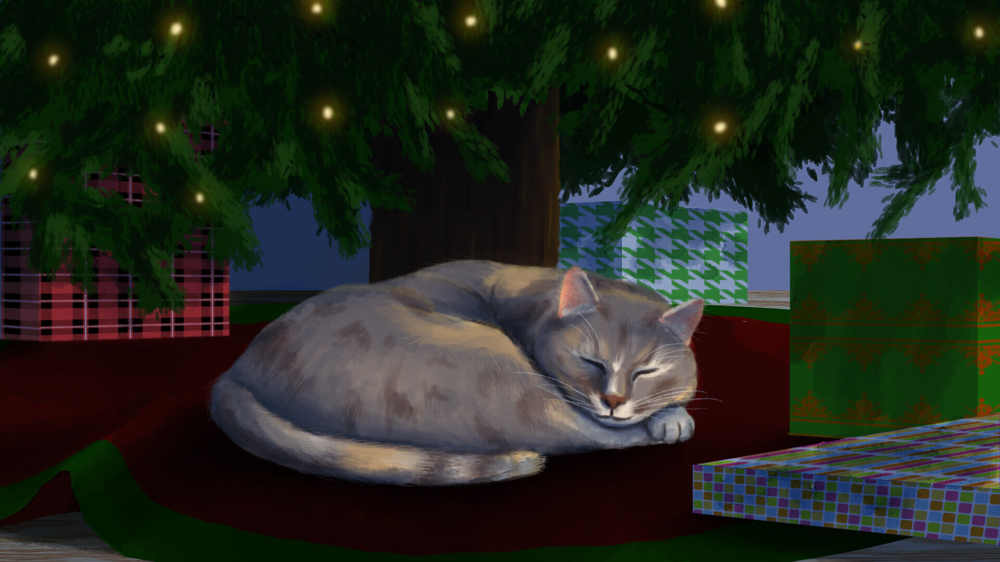

Animation Demo Reel 2024
This is my professional animation demo reel for the year 2024. It includes animation from shows such as Rock Paper Scissors and Luna, Chip and Inkie: Adventure Rangers Go!, as well as some original animation.
Final Student Animated Film 2022
This was my final film project for the Digital Animation Program (2D) at NSCC. The rigs featured in the video were made by me in Toon Boom.
Digital Still Life

This is a digital still life featuring a candle lid, an old shirt, a piece of wood and a souvenir from Barcelona. It was created in Clip Studio Paint.
Molly

This is a digital painting of my late family cat, Molly, underneath the Christmas Tree. It was created in December 2021 in Clip Studio Paint.